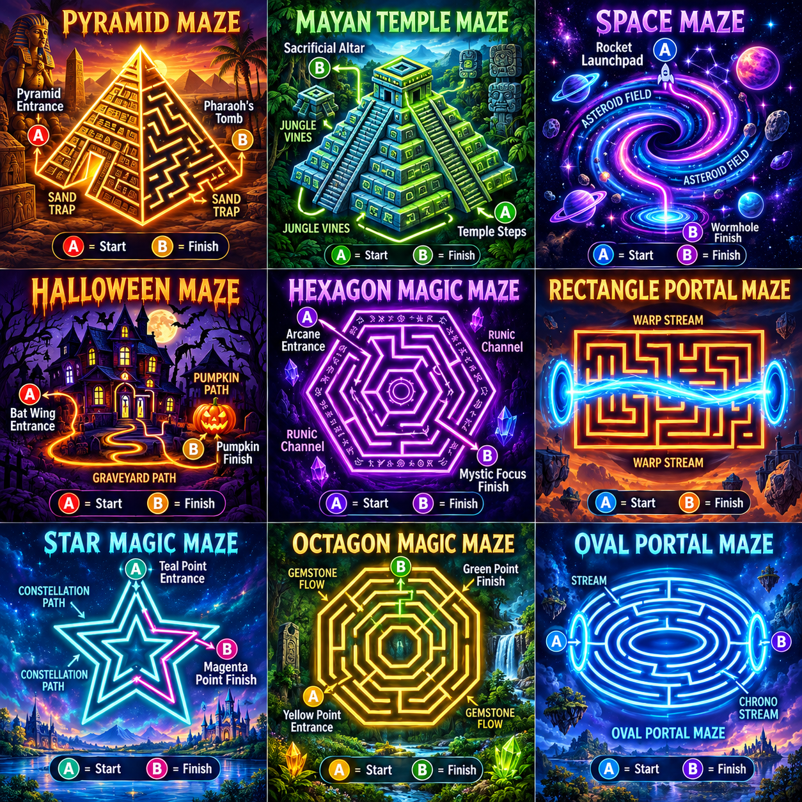

Motion telemetry
Track your walk.
Steps counted
0
Start to enable motion sensors
Total steps
0
Route distance
0 m
Speed
0.0 km/h
Pace
— min/km
Step distance*
0 m
GPS distance
0 m
*Step distance is an estimate (0.70 m per step). GPS distance/speed ignore low-accuracy fixes and small GPS jitter; buildings and phone movement can still affect results.
Distance between route dots
Shorter · lighterFarther · darker
Latitude
—
Longitude
—
Accuracy
— m
Integrated bonus game
✦ Maze Worlds — collect rewards and reach the finish
Choose from the themed mazes, collect rewards, and find the exit. This game is embedded in Route Lab, so you can play without leaving the app.
Bonus challenge
🧩 Maze Quest — earn extra points
Explore nine themed worlds inspired by the neon maze artwork below. Choose Walk-to-Play to earn one maze move per detected step, or Step-to-Move to advance one maze cell per detected step in the selected direction. Step-to-Move can record your GPS path and show it on the real map at the end. Reach B (FINISH) to earn 25 bonus points.
Direction: down
Safety: Use this mode only in a clear, open space. Stay in place and march gently; do not walk toward obstacles while looking at the screen. Select a direction with the arrows, then each detected step advances one maze cell in that direction. You can turn this mode off anytime.

Find the path from START to FINISH.0 pts